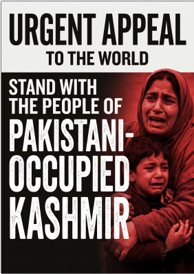

A grassroots struggle for fundamental human rights, civil liberties, and economic justice.
Understand The Crisis
A Briefing for the International Community
While the global community often views Kashmir strictly through the lens of India-Pakistan border disputes, the internal struggles of the people living in Pakistani-administered Kashmir (often referred to locally as Azad Jammu & Kashmir) are frequently overlooked. This region is currently facing severe economic marginalization and a stark deficit of civil liberties.
The Jammu Kashmir Joint Awami Action Committee (JAAC) is not a militant or separatist organization. It is a peaceful, grassroots civil-society coalition uniting local traders, transporters, lawyers, students, and everyday citizens. They mobilized to challenge the political status quo and advocate for economic survival.
Triggered by crushing inflation, manipulated power tariffs on electricity produced in their own region, and a lack of local governance, the people took to the streets in peaceful protest. The state's response has involved internet blackouts, military crackdowns, and the unlawful detention of civil leaders.
Missing Person / Core Committee Member, JAAC
Unlawfully arrested by state forces. Abducted by state agencies from Jammu & Kashmir in 2026. Under international human rights law, authorities hold a legal and moral responsibility to present a report and ensure his safety.
Civil Liberties Violation
Kashmir is not a battlefield. We demand the unconditional release of all political activists, students, and local leaders detained without due process for participating in peaceful civil rights movements.
End State Violence
We call upon international human rights watchdogs and European civic bodies to investigate the use of lethal force against civilian protests and demand accountability to save lives.
A roadmap to economic fairness, structural reform, and dignity.